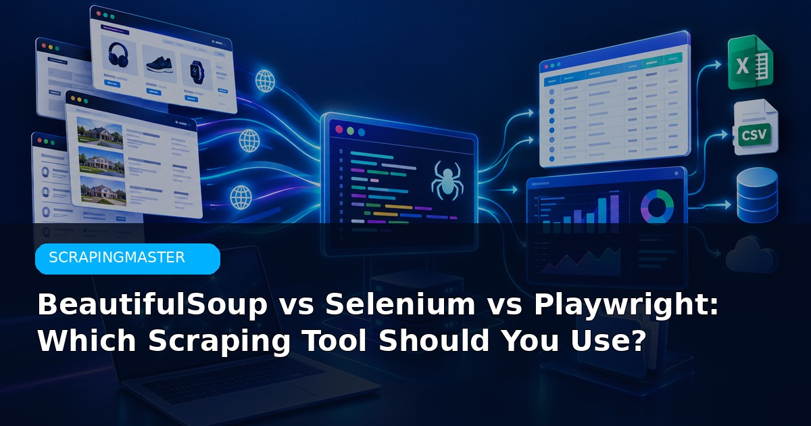
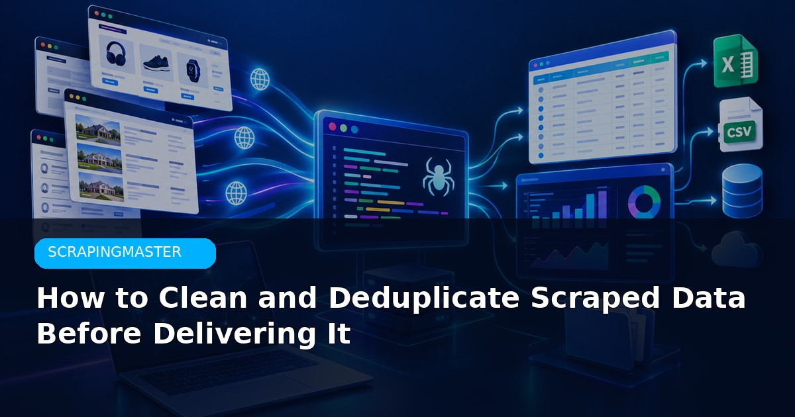
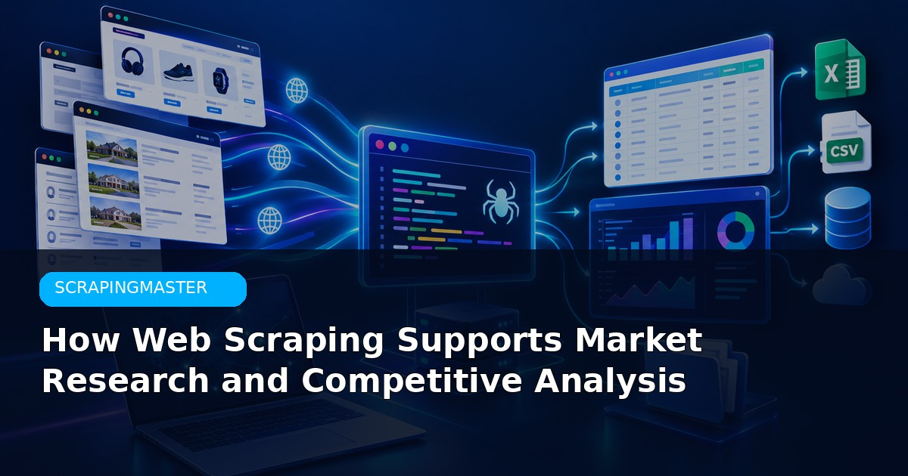

Web Scraping with Python: Beginner’s Guide
Requests, BeautifulSoup, structured data and a practical first-scraper workflow.
Read article →
BeautifulSoup vs Selenium vs Playwright
Choose the right tool based on site type, JS rendering and reliability needs.
Read article →
How to Fix 403 and 429 Errors
Diagnose blocking and rate-limit errors and build more resilient scrapers.
Read article →
Web Scraping vs API Data Extraction
When an official API is better and when scraping is the practical option.
Read article →
Clean and Deduplicate Scraped Data
Turn messy exports into clean, analysis-ready datasets without losing records.
Read article →Scrape JavaScript Websites with Python
Playwright workflow for dynamic pages with waits, locators and pagination.
Read article →Web Scraping Legal & Ethical Checklist
Practical checklist covering robots.txt, terms, privacy and responsible use.
Read article →How to Choose a Web Scraping Service
What to look for in a provider: quality, compliance, delivery and support.
Read article →
Web Scraping for Market Research
Using public data for competitive intelligence and market sizing.
Read article →